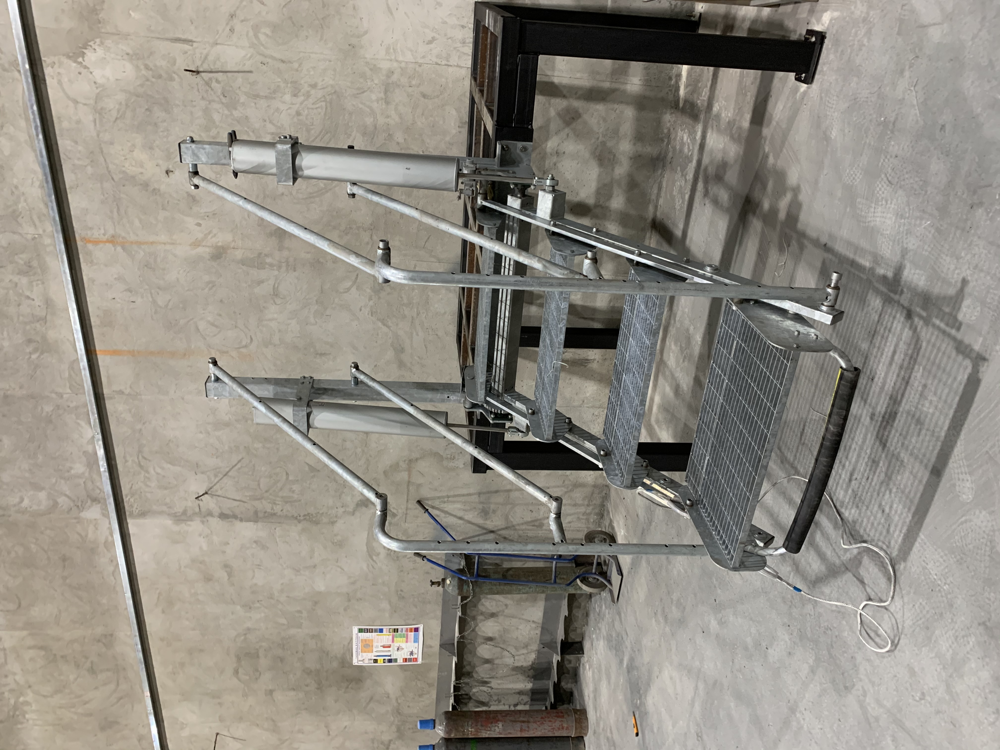
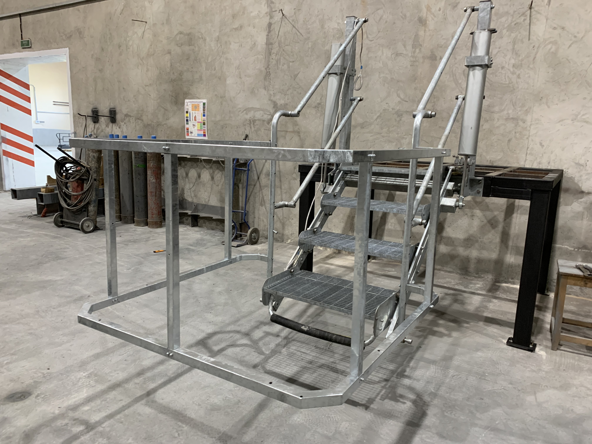
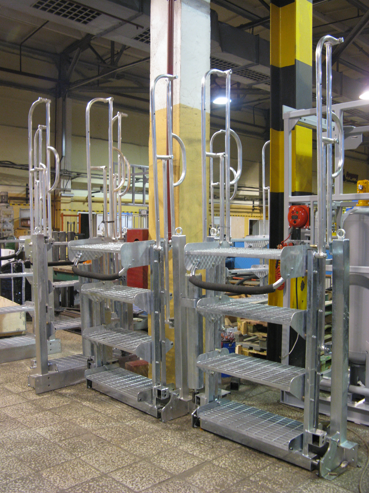
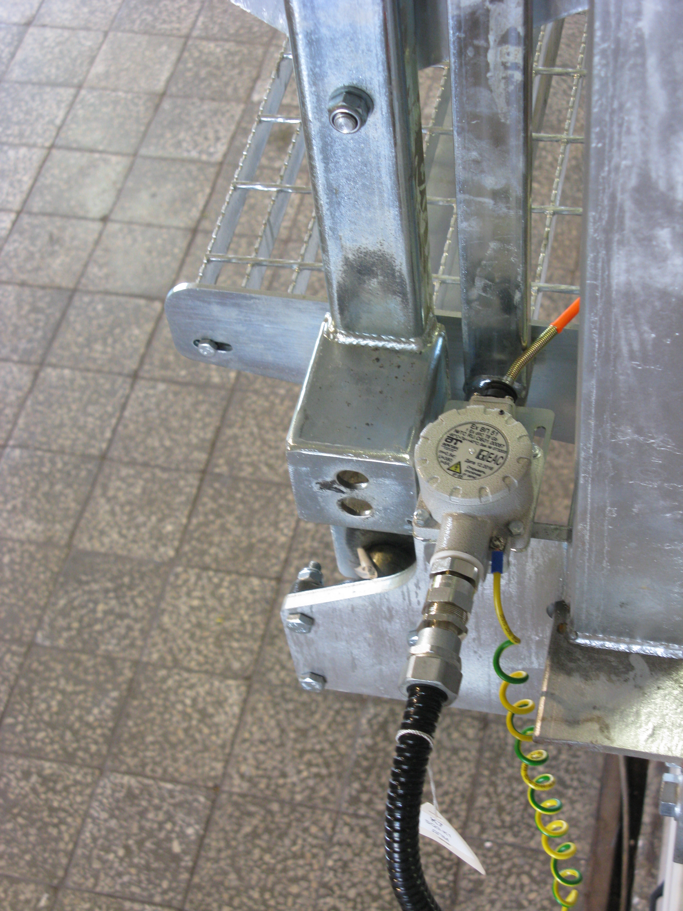

Трап откидной эстакадный (ТОЭ)
ТУ 3699-001-01104078-2015
ТОЭ предназначен для перехода людей со сливно-наливной эстакады на вагон-цистерну и автоцистерны.
Устанавливается на эстакадах, распределительных и перевалочных нефтебазах, нефтеперерабатывающих заводах и других объектах, связанных с переработкой и транспортом нефтепродуктов.
- Автоматическая фиксация угла наклона в зависимости от высоты автоцистерны
- Регулирование угла наклона моста происходит автоматически
- Обеспечивается горизонтальное положение ступеней во всем диапазоне регулировки
- Защита от защемления ног оператора между ступенями
- Наличие датчика гаражного положения
- Автоматическая фиксация моста в шести положениях
- Количество ступеней 3, 4 или 5
- Климатическое исполнение У, ХЛ
- Возможность установки дополнительного ограждения 1400х1400, 2800х2800
- Ступени имеют противоскользящую конструкцию
- Антикоррозионное покрытие



